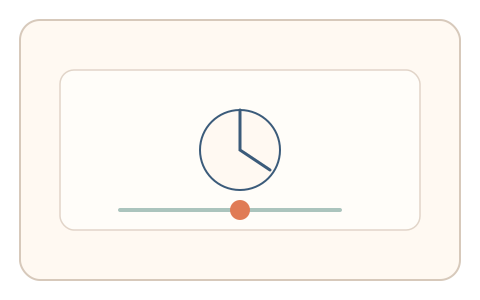
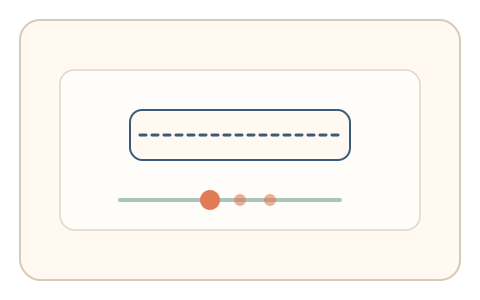

#112
Morphological Analysis - Combination Batches
已扩展
时间锁拖拽
在时间窗口与系统时钟对齐的瞬间完成拖拽，以反应时与一致性验证真实性。
概念原文
用户需在移动指示与系统时钟对齐的窗口完成拖拽，系统比较反应时与任务内一致性。任务结构为瞬时任务，信号形态为反应时/节律序列。
以“时间同步能力”作为现实耦合证据。
研究背景
时间锁任务要求用户与系统节拍对齐，真实用户会表现出特定的反应时分布与节律波动。脚本难以在不读取时钟的情况下稳定同步。
核心机制
- 显示时间窗口或节拍提示。
- 用户在对齐窗口完成拖拽。
- 记录反应时与对齐误差。
- 比较任务内一致性与基线分布。
用户流程
- 步骤 1：用户观察时间窗口提示。
- 步骤 2：对齐窗口完成拖拽。
- 步骤 3：系统记录误差并判定。
判定信号
对齐误差分布
人类同步存在稳定的偏移与波动。
反应时与节律一致性
真实用户的同步不会过度精确。
判定逻辑
误差与反应时需落在人类区间；过度精准或无波动判异常。
对抗面
- 脚本读取系统时钟精确对齐
- 重放真实用户的时间序列
防御与缓解
- 随机化时间窗口与节拍
- 加入轻微扰动降低固定同步
- 叠加轨迹与停顿信号
可达性与风险
提供更长对齐窗口与慢速模式，允许键盘替代。
- 设备延迟影响同步误差
- 节拍过快导致误拒
可视化状态

状态 1：时间窗口
提示对齐窗口或节拍。

状态 2：对齐拖拽
在窗口内完成拖拽。

状态 3：误差判定
比较对齐误差与一致性。
参考资料
Sensorimotor synchronization
说明节律同步与误差分布。
Reaction time
说明反应时作为同步证据。